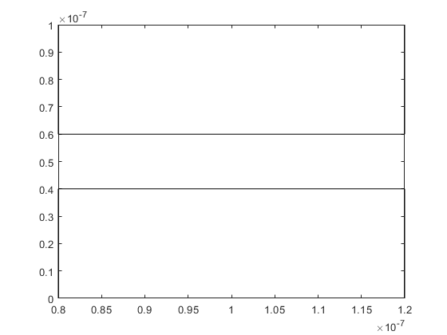

Contents
clearvars
clearvars -GLOBAL
close all
global C
global X Y
C.q_0 = 1.60217653e-19;
C.hb = 1.054571596e-34;
C.h = C.hb * 2 * pi;
C.m_0 = 9.10938215e-31;
C.kb = 1.3806504e-23;
C.eps_0 = 8.854187817e-12;
C.mu_0 = 1.2566370614e-6;
C.c = 299792458;
C.g = 9.80665;
mn = 0.26*C.m_0;
Temp = 300;
runTime = 10000;
Tmn = 0.2e-12;
sizeX = 200e-9;
sizeY = 100e-9;
Vth = sqrt(2*C.kb*Temp/mn);
size = 1000;
dispSize = 10;
Publishing Documents with MATLAB
Part 3
X = rand(2,size);
Y = rand(2,size);
Pos_X(1,:)= X(1,:)*sizeX;
Pos_Y(1,:)= Y(1,:)*sizeY;
checkXboxLHS = Pos_X > 0.8e-7;
checkXboxRHS = Pos_X < 1.2e-7;
checkXbox = checkXboxLHS & checkXboxRHS;
checkYBoxbot = Pos_Y < 0.4e-7;
checkBoxbot = checkYBoxbot & checkXbox;
checkYBoxtop = Pos_Y > 0.6e-7;
checkBoxtop = checkYBoxtop & checkXbox;
checkboxes = checkBoxtop | checkBoxbot;
while(sum(checkboxes) > 0)
Pos_X(checkboxes) = rand*sizeX;
Pos_Y(checkboxes) = rand*sizeY;
checkXboxLHS = Pos_X > 0.8e-7;
checkXboxRHS = Pos_X < 1.2e-7;
checkXbox = checkXboxLHS & checkXboxRHS;
checkYBoxbot = Pos_Y < 0.4e-7;
checkBoxbot = checkYBoxbot & checkXbox;
checkYBoxtop = Pos_Y > 0.6e-7;
checkBoxtop = checkYBoxtop & checkXbox;
checkboxes = checkBoxtop | checkBoxbot;
end
colour = rand(1,dispSize);
sigma = sqrt(C.kb*Temp/mn);
mu = Vth/sqrt(2);
MB_dist = makedist('Normal',mu,sigma);
Vel_X = zeros(1,size);
Vel_Y = zeros(1,size);
for i=1:1:size
Vel_X(1,i) = random(MB_dist);
Vel_Y(1,i) = random(MB_dist);
end
spacStep = 0.01*sizeX;
dt = spacStep/Vth;
steps = 1000;
Vel_X(1,:) = Vel_X(1,:)*dt;
Vel_Y(1,:) = Vel_Y(1,:)*dt;
Pscat = 1 - exp(-(dt/Tmn));
calcTemp = zeros(1,size);
figure(6)
boxplotX = [0.8e-7 0.8e-7 1.2e-7 1.2e-7];
boxplotY = [0 0.4e-7 0.4e-7 0];
plot(boxplotX,boxplotY,'color',[0 0 0]);
hold on
boxplotY = [1e-7 0.6e-7 0.6e-7 1e-7];
plot(boxplotX,boxplotY,'color',[0 0 0]);
for i = 1:1:steps
scattered = rand(1,size);
scatterCheck = scattered <= Pscat;
velocity = random(MB_dist,1,size);
Vel_X(scatterCheck) = velocity(scatterCheck).*dt;
velocity = random(MB_dist,1,size);
Vel_Y(scatterCheck) = velocity(scatterCheck).*dt;
checkXright = Pos_X + Vel_X > 2e-7;
Pos_X(checkXright) = Pos_X(checkXright)+Vel_X(checkXright)- sizeX;
checkXleft = Pos_X +Vel_X<0;
Pos_X(checkXleft) = Pos_X(checkXleft) +Vel_X(checkXleft)+ sizeX;
checkXboxLHS = (Pos_X + Vel_X) > 0.8e-7;
checkXboxRHS = (Pos_X + Vel_X) < 1.2e-7;
checkXbox = checkXboxLHS & checkXboxRHS;
checkYBoxbot =(Pos_Y + Vel_Y) < 0.4e-7;
checkBoxBottom = checkYBoxbot & checkXbox;
Vel_X(checkBoxBottom) = Vel_X(checkBoxBottom).*(-1);
checkXboxLHS = (Pos_X + Vel_X) > 0.8e-7 + spacStep;
checkXboxRHS = (Pos_X + Vel_X) < 1.2e-7 - spacStep;
checkXbox = checkXboxLHS & checkXboxRHS;
checkYabove =Pos_Y < 0.4e-7 - spacStep;
changeY = checkYabove & checkXbox;
Vel_Y(changeY) = Vel_Y(changeY).*(-1);
checkXboxLHS = (Pos_X + Vel_X) > 0.8e-7;
checkXboxRHS = (Pos_X + Vel_X) < 1.2e-7;
checkXbox = checkXboxLHS & checkXboxRHS;
checkYBoxbot =(Pos_Y + Vel_Y) > 0.6e-7;
checkBoxBottom = checkYBoxbot & checkXbox;
Vel_X(checkBoxBottom) = Vel_X(checkBoxBottom).*(-1);
checkXboxLHS = (Pos_X + Vel_X) > 0.8e-7 + spacStep;
checkXboxRHS = (Pos_X + Vel_X) < 1.2e-7 - spacStep;
checkXbox = checkXboxLHS & checkXboxRHS;
checkYabove =Pos_Y > 0.6e-7 + spacStep;
changeY = checkYabove & checkXbox;
Vel_Y(changeY) = Vel_Y(changeY).*(-1);
leftover = ~(checkXright | checkXleft | checkBoxBottom);
Pos_X(leftover) = Pos_X(leftover) + Vel_X(leftover);
checkY = (Pos_Y+Vel_Y > 1e-7 | Pos_Y + Vel_Y < 0);
Vel_Y(checkY) = Vel_Y(checkY).*(-1);
Pos_Y(1,:) = Pos_Y(1,:) + Vel_Y(1,:);
Ydt = Vel_Y./dt;
Xdt = Vel_X./dt;
Ysum = sum(Ydt);
Xsum = sum(Xdt);
Ysquare = Ysum.^2;
Xsquare = Xsum.^2;
vel = sqrt(Ysquare + Xsquare)/size;
calcTemp = (mn*(vel)^2)/(2*C.kb);
averageTemp = calcTemp;
mean_vel = sum(velocity)/size;
calcTemp(1,i) = mn*(mean_vel)^2/(2*C.kb);
prevX(i,:) = Pos_X(1,:);
prevY(i,:) = Pos_Y(1,:);
figure(2)
hist(sqrt((Vel_X/dt).^2 + (Vel_Y/dt).^2));
end
for j = 1:1:dispSize
figure (35)
plot(prevX(:,j),prevY(:,j),'color',[colour(1,j) 0 j/dispSize]);
title('Particle Trajectories; with walls')
rectangle('Position',[1 2 5 6])
axis([0 10 0 10])
xlim([0 sizeX]);
ylim([0 sizeY]);
drawnow
hold on
end
figure(7)
n = hist3([Pos_X',Pos_Y'],[15,15]);
pcolor(n)
title('Electron Density Map')
X_edges = linspace(0,sizeX,10);
Y_edges = linspace(0,sizeY,10);
X_bins = discretize(Pos_X,X_edges);
Y_bins = discretize(Pos_Y,Y_edges);
binTemp = zeros(10,10);
for k = 1:1:10
for L = 1:1:10
logicX = X_bins == k;
logicY = Y_bins == L;
logic = logicX & logicY;
sumX = sum(Vel_X(logic))/dt;
sumY = sum(Vel_Y(logic))/dt;
mean_vel = sqrt((sumX)^2 + (sumY)^2);
binTemp(k,L) = mn*(mean_vel)^2/(2*C.kb);
end
end
figure(8)
title('Temperature Map')
surf(binTemp)
colorbar;
